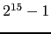
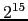
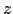

Next: Load Instructions Up: Description of the MIPS Previous: Comparison Instructions
In all instructions below, Src2 can either be a register or an immediate value (integer). Branch instructions use a signed 16-bit offset field; hence they can jump  instructions (not bytes) forward or  instructions backwards. The jump instruction contains a 26 bit address field.
b labelBranch instruction 
Unconditionally branch to the instruction at the label.
bczt labelBranch Coprocessor  True
bczf labelBranch Coprocessor False
Conditionally branch to the instruction at the label if coprocessor
's condition flag is true (false).
beq Rsrc1, Src2, labelBranch on Equal
Conditionally branch to the instruction at the label if the contents
of register Rsrc1 equals Src2.
beqz Rsrc, labelBranch on Equal Zero 
Conditionally branch to the instruction at the label if the contents
of Rsrc equals 0.
bge Rsrc1, Src2, labelBranch on Greater Than Equal 
bgeu Rsrc1, Src2, labelBranch on GTE Unsigned 
Conditionally branch to the instruction at the label if the contents
of register Rsrc1 are greater than or equal to Src2.
bgez Rsrc, labelBranch on Greater Than Equal Zero
Conditionally branch to the instruction at the label if the contents
of Rsrc are greater than or equal to 0.
bgezal Rsrc, labelBranch on Greater Than Equal Zero And Link
Conditionally branch to the instruction at the label if the contents
of Rsrc are greater than or equal to 0. Save the address of
the next instruction in register 31.
bgt Rsrc1, Src2, labelBranch on Greater Than 
bgtu Rsrc1, Src2, labelBranch on Greater Than Unsigned 
Conditionally branch to the instruction at the label if the contents
of register Rsrc1 are greater than Src2.
bgtz Rsrc, labelBranch on Greater Than Zero
Conditionally branch to the instruction at the label if the contents
of Rsrc are greater than 0.
ble Rsrc1, Src2, labelBranch on Less Than Equal 
bleu Rsrc1, Src2, labelBranch on LTE Unsigned 
Conditionally branch to the instruction at the label if the contents
of register Rsrc1 are less than or equal to Src2.
blez Rsrc, labelBranch on Less Than Equal Zero
Conditionally branch to the instruction at the label if the contents
of Rsrc are less than or equal to 0.
bgezal Rsrc, labelBranch on Greater Than Equal Zero And Link
bltzal Rsrc, labelBranch on Less Than And Link
Conditionally branch to the instruction at the label if the contents
of Rsrc are greater or equal to 0 or less than 0,
respectively. Save the address of the next instruction in register 31.
blt Rsrc1, Src2, labelBranch on Less Than 
bltu Rsrc1, Src2, labelBranch on Less Than Unsigned 
Conditionally branch to the instruction at the label if the contents
of register Rsrc1 are less than Src2.
bltz Rsrc, labelBranch on Less Than Zero
Conditionally branch to the instruction at the label if the contents
of Rsrc are less than 0.
bne Rsrc1, Src2, labelBranch on Not Equal
Conditionally branch to the instruction at the label if the contents
of register Rsrc1 are not equal to Src2.
bnez Rsrc, labelBranch on Not Equal Zero 
Conditionally branch to the instruction at the label if the contents
of Rsrc are not equal to 0.
j labelJump
Unconditionally jump to the instruction at the label.
jal labelJump and Link
jalr RsrcJump and Link Register
Unconditionally jump to the instruction at the label or whose address
is in register Rsrc. Save the address of the next
instruction in register 31.
jr RsrcJump Register
Unconditionally jump to the instruction whose address is in register
Rsrc.
Ian Moor 2009-03-11